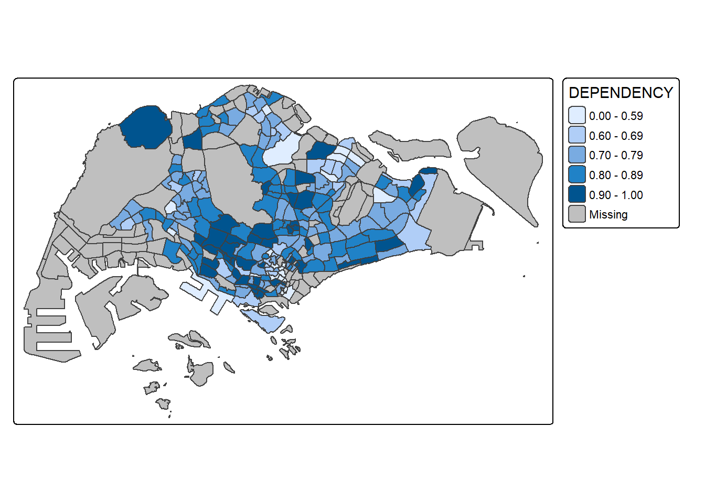
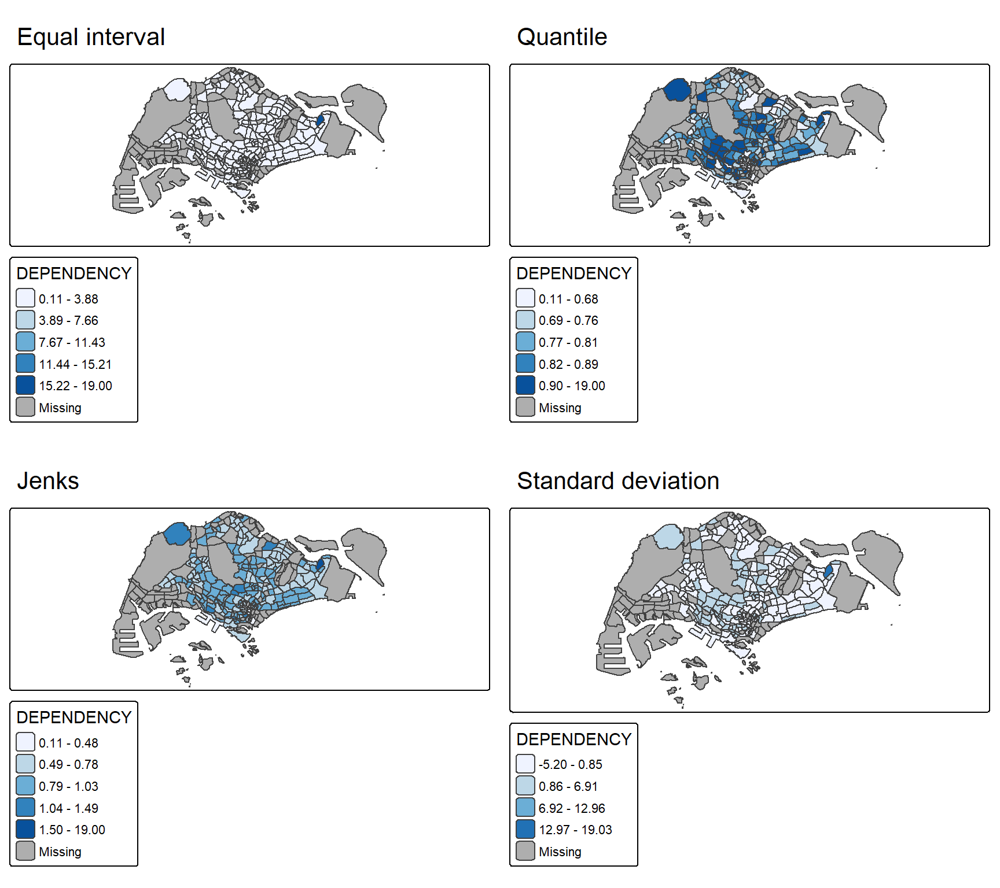
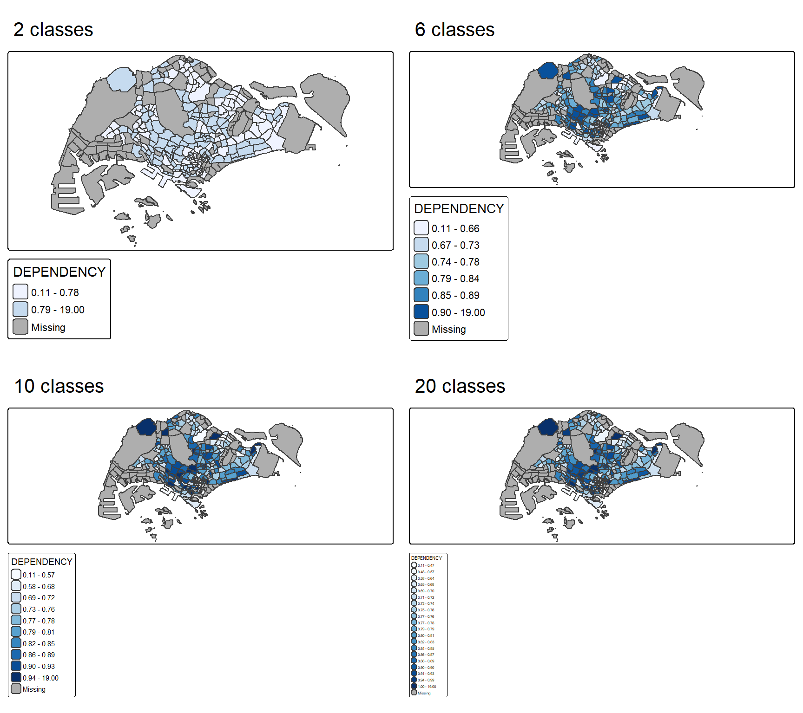
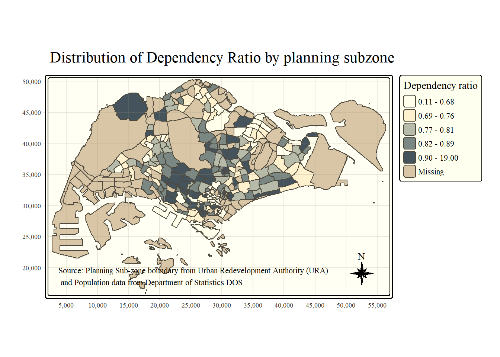

pacman::p_load(sf, tmap, tidyverse)Hands-on Exercise 9a
Choropleth Mapping with R
21 Choropleth Mapping with R
21.1 Overview
Choropleth mapping involves the symbolisation of enumeration units, such as countries, provinces, states, counties or census units, using area patterns or graduated colours. A social scientist may need a choropleth map to portray the spatial distribution of the aged population of Singapore by Master Plan 2014 Subzone Boundary.
This chapter plots functional and truthful choropleth maps with an R package called tmap.
21.2 Getting Started
The key R package for this exercise is tmap. Four other packages are used alongside it.
- readr for importing delimited text files,
- tidyr for tidying data,
- dplyr for wrangling data,
- sf for handling geospatial data.
readr, tidyr and dplyr are part of tidyverse, so only tidyverse needs to be installed.
21.3 Importing Data into R
21.3.1 The Data
Two datasets are used to create the choropleth map.
- Master Plan 2014 Subzone Boundary (Web) (
MP14_SUBZONE_WEB_PL) in ESRI shapefile format. This geospatial data holds the geographical boundary of Singapore at the planning subzone level, based on the Urban Redevelopment Authority (URA) Master Plan 2014. - Singapore Residents by Planning Area / Subzone, Age Group, Sex and Type of Dwelling, June 2011 to 2020 (
respopagesextod2011to2020.csv). This aspatial data file carries no coordinates, but its PA and SZ fields serve as unique identifiers to geocode to theMP14_SUBZONE_WEB_PLshapefile.
21.3.2 Importing Geospatial Data into R
st_read() of sf imports the MP14_SUBZONE_WEB_PL shapefile into R as a simple feature data frame called mpsz.
mpsz <- st_read(dsn = "data/geospatial",
layer = "MP14_SUBZONE_WEB_PL")Reading layer `MP14_SUBZONE_WEB_PL' from data source
`C:\myvaa\ISSS608-VAA_my\data\geospatial' using driver `ESRI Shapefile'
Simple feature collection with 323 features and 15 fields
Geometry type: MULTIPOLYGON
Dimension: XY
Bounding box: xmin: 2667.538 ymin: 15748.72 xmax: 56396.44 ymax: 50256.33
Projected CRS: SVY21The content of mpsz is examined with the code chunk below.
mpszSimple feature collection with 323 features and 15 fields
Geometry type: MULTIPOLYGON
Dimension: XY
Bounding box: xmin: 2667.538 ymin: 15748.72 xmax: 56396.44 ymax: 50256.33
Projected CRS: SVY21
First 10 features:
OBJECTID SUBZONE_NO SUBZONE_N SUBZONE_C CA_IND PLN_AREA_N
1 1 1 MARINA SOUTH MSSZ01 Y MARINA SOUTH
2 2 1 PEARL'S HILL OTSZ01 Y OUTRAM
3 3 3 BOAT QUAY SRSZ03 Y SINGAPORE RIVER
4 4 8 HENDERSON HILL BMSZ08 N BUKIT MERAH
5 5 3 REDHILL BMSZ03 N BUKIT MERAH
6 6 7 ALEXANDRA HILL BMSZ07 N BUKIT MERAH
7 7 9 BUKIT HO SWEE BMSZ09 N BUKIT MERAH
8 8 2 CLARKE QUAY SRSZ02 Y SINGAPORE RIVER
9 9 13 PASIR PANJANG 1 QTSZ13 N QUEENSTOWN
10 10 7 QUEENSWAY QTSZ07 N QUEENSTOWN
PLN_AREA_C REGION_N REGION_C INC_CRC FMEL_UPD_D X_ADDR
1 MS CENTRAL REGION CR 5ED7EB253F99252E 2014-12-05 31595.84
2 OT CENTRAL REGION CR 8C7149B9EB32EEFC 2014-12-05 28679.06
3 SR CENTRAL REGION CR C35FEFF02B13E0E5 2014-12-05 29654.96
4 BM CENTRAL REGION CR 3775D82C5DDBEFBD 2014-12-05 26782.83
5 BM CENTRAL REGION CR 85D9ABEF0A40678F 2014-12-05 26201.96
6 BM CENTRAL REGION CR 9D286521EF5E3B59 2014-12-05 25358.82
7 BM CENTRAL REGION CR 7839A8577144EFE2 2014-12-05 27680.06
8 SR CENTRAL REGION CR 48661DC0FBA09F7A 2014-12-05 29253.21
9 QT CENTRAL REGION CR 1F721290C421BFAB 2014-12-05 22077.34
10 QT CENTRAL REGION CR 3580D2AFFBEE914C 2014-12-05 24168.31
Y_ADDR SHAPE_Leng SHAPE_Area geometry
1 29220.19 5267.381 1630379.3 MULTIPOLYGON (((31495.56 30...
2 29782.05 3506.107 559816.2 MULTIPOLYGON (((29092.28 30...
3 29974.66 1740.926 160807.5 MULTIPOLYGON (((29932.33 29...
4 29933.77 3313.625 595428.9 MULTIPOLYGON (((27131.28 30...
5 30005.70 2825.594 387429.4 MULTIPOLYGON (((26451.03 30...
6 29991.38 4428.913 1030378.8 MULTIPOLYGON (((25899.7 297...
7 30230.86 3275.312 551732.0 MULTIPOLYGON (((27746.95 30...
8 30222.86 2208.619 290184.7 MULTIPOLYGON (((29351.26 29...
9 29893.78 6571.323 1084792.3 MULTIPOLYGON (((20996.49 30...
10 30104.18 3454.239 631644.3 MULTIPOLYGON (((24472.11 29...
NoteThings to Learn from the Code Chunk Above
Only the first ten records are displayed. The simple feature data frame holds 323 features and 15 fields, with a MULTIPOLYGON geometry projected in SVY21.
21.3.3 Importing Attribute Data into R
read_csv() of readr imports respopagesextod2011to2020.csv into an R data frame called popdata.
popdata <- read_csv("data/aspatial/respopagesextod2011to2020.csv")21.3.4 Data Preparation
A data table with year 2020 values is required before a thematic map can be prepared. The table should hold the variables PA, SZ, YOUNG, ECONOMY ACTIVE, AGED, TOTAL and DEPENDENCY.
- YOUNG covers age group 0 to 4 until age group 20 to 24,
- ECONOMY ACTIVE covers age group 25 to 29 until age group 60 to 64,
- AGED covers age group 65 and above,
- TOTAL covers all age groups,
- DEPENDENCY is the ratio between the young and aged groups against the economy-active group.
21.3.4.1 Data Wrangling
The wrangling uses pivot_wider() of tidyr and mutate(), filter(), group_by() and select() of dplyr.
popdata2020 <- popdata %>%
filter(Time == 2020) %>%
group_by(PA, SZ, AG) %>%
summarise(`POP` = sum(`Pop`)) %>%
ungroup() %>%
pivot_wider(names_from=AG,
values_from=POP) %>%
mutate(YOUNG = rowSums(.[3:6])
+rowSums(.[12])) %>%
mutate(`ECONOMY ACTIVE` = rowSums(.[7:11])+
rowSums(.[13:15]))%>%
mutate(`AGED`=rowSums(.[16:21])) %>%
mutate(`TOTAL`=rowSums(.[3:21])) %>%
mutate(`DEPENDENCY` = (`YOUNG` + `AGED`)
/`ECONOMY ACTIVE`) %>%
select(`PA`, `SZ`, `YOUNG`,
`ECONOMY ACTIVE`, `AGED`,
`TOTAL`, `DEPENDENCY`)21.3.4.2 Joining the Attribute Data and Geospatial Data
The values in the PA and SZ fields are first converted to uppercase. The PA and SZ fields mix upper and lowercase, while SUBZONE_N and PLN_AREA_N are uppercase.
popdata2020 <- popdata2020 %>%
mutate(across(c(PA, SZ), toupper)) %>%
filter(`ECONOMY ACTIVE` > 0)left_join() of dplyr joins the geographical data and attribute table using the planning subzone name, with SUBZONE_N and SZ as the common identifier.
mpsz_pop2020 <- left_join(mpsz, popdata2020,
by = c("SUBZONE_N" = "SZ"))
NoteThings to Learn from the Code Chunk Above
left_join() is called with the mpsz simple feature data frame as the left table so the output stays a simple feature data frame.
write_rds(mpsz_pop2020, "data/rds/mpszpop2020.rds")21.4 Choropleth Mapping Geospatial Data Using tmap
Two approaches prepare a thematic map with tmap. The first plots a thematic map quickly with qtm(). The second plots a highly customisable thematic map with tmap elements.
21.4.1 Plotting a Choropleth Map Quickly by Using qtm()
qtm() is the quickest way to draw a choropleth map with tmap. It is concise and gives a good default visualisation in many cases.

tmap_mode("plot")
qtm(mpsz_pop2020,
fill = "DEPENDENCY")
NoteThings to Learn from the Code Chunk Above
tmap_mode("plot") produces a static map. The “view” option produces an interactive map instead. The fill argument maps the DEPENDENCY attribute to colour.
21.4.2 Creating a Choropleth Map by Using tmap’s Elements
qtm() makes the aesthetics of individual layers harder to control. tmap’s drawing elements produce a high-quality cartographic choropleth map.

tm_shape(mpsz_pop2020)+
tm_polygons(fill = "DEPENDENCY",
fill.scale = tm_scale_intervals(
style = "quantile",
n = 5,
values = "brewer.blues"),
fill.legend = tm_legend(
title = "Dependency ratio")) +
tm_title("Distribution of Dependency Ratio by planning subzone") +
tm_layout(frame = TRUE) +
tm_borders(fill_alpha = 0.5) +
tm_compass(type="8star", size = 2) +
tm_grid(alpha =0.2) +
tm_credits("Source: Planning Sub-zone boundary from Urban Redevelopment Authority (URA)\n and Population data from Department of Statistics DOS",
position = c("left", "bottom"))21.4.2.1 Drawing a Base Map
The basic building block of tmap is tm_shape() followed by one or more layer elements such as tm_fill() and tm_polygons(). tm_shape() defines the input data and tm_polygons() draws the planning subzone polygons.

tm_shape(mpsz_pop2020) +
tm_polygons()21.4.2.2 Drawing a Choropleth Map Using tm_polygons()
Assigning the target variable to tm_polygons() draws a choropleth map of that variable by planning subzone.

tm_shape(mpsz_pop2020)+
tm_polygons("DEPENDENCY")
NoteThings to Learn from the Code Chunk Above
The default interval binning is “pretty”. The default colour scheme is YlOrRd of ColorBrewer. Missing values are shaded grey by default.
21.4.2.3 Drawing a Choropleth Map Using tm_fill() and tm_borders()
tm_polygons() is a wrapper of tm_fill() and tm_borders(). tm_fill() shades the polygons with the default colour scheme and tm_borders() adds the shapefile borders. The code chunk below draws a choropleth map with tm_fill() alone.

tm_shape(mpsz_pop2020)+
tm_fill("DEPENDENCY")The subzones are shaded by their dependency values. tm_borders() adds the subzone boundaries.

tm_shape(mpsz_pop2020)+
tm_polygons(fill = "DEPENDENCY") +
tm_borders(lwd = 0.01,
fill_alpha = 0.1)
NoteThings to Learn from the Code Chunk Above
The alpha argument sets transparency between 0 (fully transparent) and 1 (fully opaque), defaulting to the colour’s own alpha. tm_borders() also takes col for border colour, lwd for border line width (default 1) and lty for border line type (default “solid”).
21.4.3 Data Classification Methods of tmap
Most choropleth maps employ a data classification method. Classification groups a large number of observations into data ranges or classes. tmap provides ten methods, namely fixed, sd, equal, pretty (default), quantile, kmeans, hclust, bclust, fisher and jenks. The style argument of tm_fill() or tm_polygons() selects the method.
21.4.3.1 Plotting Choropleth Maps with Built-in Classification Methods
The code chunk below uses the jenks method with five classes.

tm_shape(mpsz_pop2020)+
tm_polygons("DEPENDENCY",
fill.scale = tm_scale_intervals(
style = "jenks",
n = 5)) +
tm_borders(fill_alpha = 0.5)The code chunk below uses the equal method.

tm_shape(mpsz_pop2020)+
tm_polygons("DEPENDENCY",
fill.scale = tm_scale_intervals(
style = "equal",
n = 5)) +
tm_borders(fill_alpha = 0.5)
TipReading the Plot
The quantile classification spreads observations more evenly across classes than the equal classification. The choice of method changes the visual story, so the same data can read very differently under different classifications.
21.4.3.2 Plotting Choropleth Map with Custom Break
For the built-in styles, the category breaks are computed internally. The breaks argument of tm_fill() overrides these defaults. The breaks include a minimum and maximum, so n categories require n+1 break elements in increasing order.
Descriptive statistics on the variable guide the break points. The code chunk below computes the statistics of the DEPENDENCY field.
summary(mpsz_pop2020$DEPENDENCY) Min. 1st Qu. Median Mean 3rd Qu. Max. NA's
0.1111 0.7147 0.7867 0.8585 0.8763 19.0000 92 The break points are set at 0.60, 0.70, 0.80 and 0.90, with a minimum of 0 and a maximum of 1.00. The breaks vector is therefore c(0, 0.60, 0.70, 0.80, 0.90, 1.00).

tm_shape(mpsz_pop2020)+
tm_polygons("DEPENDENCY",
breaks = c(0, 0.60, 0.70, 0.80, 0.90, 1.00)) +
tm_borders(fill_alpha = 0.5)Do It Yourself
The appearance of a choropleth map shifts with the classification, so testing alternatives is worthwhile.
- Using what you have learned, prepare choropleth maps with different classification methods supported by tmap and compare their differences.
- Prepare choropleth maps with the same classification method but different numbers of classes (2, 6, 10, 20). Compare the output maps. What observation can you draw?
Answer to the First Task
Four classification methods are applied to the same DEPENDENCY field with five classes each, then placed side by side with tmap_arrange().

dep_equal <- tm_shape(mpsz_pop2020) +
tm_polygons("DEPENDENCY",
fill.scale = tm_scale_intervals(
style = "equal", n = 5,
values = "brewer.blues")) +
tm_borders(fill_alpha = 0.5) +
tm_title("Equal interval")
dep_quantile <- tm_shape(mpsz_pop2020) +
tm_polygons("DEPENDENCY",
fill.scale = tm_scale_intervals(
style = "quantile", n = 5,
values = "brewer.blues")) +
tm_borders(fill_alpha = 0.5) +
tm_title("Quantile")
dep_jenks <- tm_shape(mpsz_pop2020) +
tm_polygons("DEPENDENCY",
fill.scale = tm_scale_intervals(
style = "jenks", n = 5,
values = "brewer.blues")) +
tm_borders(fill_alpha = 0.5) +
tm_title("Jenks")
dep_sd <- tm_shape(mpsz_pop2020) +
tm_polygons("DEPENDENCY",
fill.scale = tm_scale_intervals(
style = "sd",
values = "brewer.blues")) +
tm_borders(fill_alpha = 0.5) +
tm_title("Standard deviation")
tmap_arrange(dep_equal, dep_quantile,
dep_jenks, dep_sd, ncol = 2)
TipReading the Plot
Equal interval divides the range into bands of equal width. The dependency ratio is right-skewed with a few very high values, so most subzones fall into the lowest band and the map reads as almost one colour. Quantile places an equal count of subzones in each class, which spreads the colours across the map and exposes far more spatial variation. Jenks groups the values at their natural breaks and produces a balanced map close to the quantile result. Standard deviation shades each subzone by its distance from the mean and highlights the extreme outliers rather than the general pattern. The same data therefore tells four different stories, and quantile and jenks reveal the most usable spatial structure for this variable.
Answer to the Second Task
The quantile method is held fixed while the number of classes is set to 2, 6, 10 and 20.

dep_n2 <- tm_shape(mpsz_pop2020) +
tm_polygons("DEPENDENCY",
fill.scale = tm_scale_intervals(
style = "quantile", n = 2,
values = "brewer.blues")) +
tm_borders(fill_alpha = 0.5) +
tm_title("2 classes")
dep_n6 <- tm_shape(mpsz_pop2020) +
tm_polygons("DEPENDENCY",
fill.scale = tm_scale_intervals(
style = "quantile", n = 6,
values = "brewer.blues")) +
tm_borders(fill_alpha = 0.5) +
tm_title("6 classes")
dep_n10 <- tm_shape(mpsz_pop2020) +
tm_polygons("DEPENDENCY",
fill.scale = tm_scale_intervals(
style = "quantile", n = 10,
values = "brewer.blues")) +
tm_borders(fill_alpha = 0.5) +
tm_title("10 classes")
dep_n20 <- tm_shape(mpsz_pop2020) +
tm_polygons("DEPENDENCY",
fill.scale = tm_scale_intervals(
style = "quantile", n = 20,
values = "brewer.blues")) +
tm_borders(fill_alpha = 0.5) +
tm_title("20 classes")
tmap_arrange(dep_n2, dep_n6,
dep_n10, dep_n20, ncol = 2)
TipReading the Plot
With two classes the map shows only a broad split between low and high dependency and hides almost all local variation. Six and ten classes add progressively more detail and the spatial pattern becomes richer and easier to read. Twenty classes shade the map so finely that neighbouring colours are hard to tell apart and the legend grows too long to scan, so the map approaches a continuous wash that is harder to interpret. More classes show more detail only up to a point, and a moderate count of around five to seven balances detail against legibility for most readers.
21.4.4 Colour Scheme
tmap supports colour ramps defined by the user or drawn from the RColorBrewer package.
21.4.4.1 Using ColourBrewer Palette
The preferred colour is assigned to the values argument of tm_scale_intervals().

tm_shape(mpsz_pop2020)+
tm_polygons("DEPENDENCY",
fill.scale = tm_scale_intervals(
style = "quantile",
n = 5,
values = "brewer.greens")) +
tm_borders(fill_alpha = 0.5)A “-” prefix reverses the colour shading.

tm_shape(mpsz_pop2020)+
tm_polygons("DEPENDENCY",
fill.scale = tm_scale_intervals(
style = "quantile",
n = 5,
values = "-brewer.greens")) +
tm_borders(fill_alpha = 0.5)21.4.5 Map Layouts
Map layout refers to the combination of all map elements into a cohesive map. Map elements include the mapped objects, the title, the scale bar, the compass, the margins and the aspect ratios.
21.4.5.1 Map Legend
Several tm_legend() options change the placement, format and appearance of the legend.

tm_shape(mpsz_pop2020)+
tm_polygons("DEPENDENCY",
fill.scale = tm_scale_intervals(
style = "jenks",
n = 5,
values = "brewer.greens"),
fill.legend = tm_legend(
title = "Dependency ratio")) +
tm_borders(fill_alpha = 0.5) +
tm_title("Distribution of Dependency Ratio by planning subzone \n(Jenks classification)")21.4.5.2 Map Style
tmap allows a wide variety of layout settings, called through tmap_style(). The code chunk below uses the classic style.

tm_shape(mpsz_pop2020)+
tm_fill("DEPENDENCY",
style = "quantile",
palette = "-Greens") +
tm_borders(alpha = 0.5) +
tmap_style("classic")21.4.5.3 Cartographic Furniture
tmap provides arguments for other map furniture such as a compass, scale bar and grid lines. tm_compass(), tm_scale_bar() and tm_grid() add these elements to the choropleth map.

tm_shape(mpsz_pop2020)+
tm_polygons(fill = "DEPENDENCY",
fill.scale = tm_scale_intervals(
style = "quantile",
n = 5,
values = "brewer.blues"),
fill.legend = tm_legend(
title = "Dependency ratio")) +
tm_title("Distribution of Dependency Ratio by planning subzone") +
tm_layout(frame = TRUE) +
tm_borders(fill_alpha = 0.5) +
tm_compass(type="8star", size = 2) +
tm_grid(alpha =0.2) +
tm_credits("Source: Planning Sub-zone boundary from Urban Redevelopment Authority (URA)\n and Population data from Department of Statistics DOS",
position = c("left", "bottom"))The default style is reset with the code chunk below.
tmap_style("white")21.4.6 Drawing Small Multiple Choropleth Maps
Small multiple maps, also called facet maps, arrange many maps side by side and sometimes stacked vertically. They show how spatial relationships change with respect to another variable such as time. tmap plots small multiple maps in three ways, by assigning multiple values to at least one aesthetic argument, by defining a group-by variable in tm_facets() and by creating multiple stand-alone maps with tmap_arrange().
21.4.6.1 By Assigning Multiple Values to at Least One Aesthetic Argument
In this example, small multiple choropleth maps are created by defining ncols in tm_fill().

tm_shape(mpsz_pop2020)+
tm_fill(c("YOUNG", "AGED"),
style = "equal",
palette = "Blues") +
tm_layout(legend.position = c("right", "bottom")) +
tm_borders(alpha = 0.5) +
tmap_style("white")Multiple values are assigned to more than one aesthetic argument in this example.

tm_shape(mpsz_pop2020)+
tm_polygons(c("DEPENDENCY","AGED"),
style = c("equal", "quantile"),
palette = list("Blues","Greens")) +
tm_layout(legend.position = c("right", "bottom"))21.4.6.2 By Defining a Group-by Variable in tm_facets()
Multiple small choropleth maps are created with tm_facets().

tm_shape(mpsz_pop2020) +
tm_fill("DEPENDENCY",
style = "quantile",
palette = "Blues",
thres.poly = 0) +
tm_facets(by="REGION_N",
free.coords=TRUE) +
tm_layout(legend.show = FALSE,
title.position = c("center", "center"),
title.size = 20) +
tm_borders(alpha = 0.5)21.4.6.3 By Creating Multiple Stand-alone Maps with tmap_arrange()
Multiple small choropleth maps are created as stand-alone maps and combined with tmap_arrange().

youngmap <- tm_shape(mpsz_pop2020)+
tm_polygons("YOUNG",
style = "quantile",
palette = "Blues")
agedmap <- tm_shape(mpsz_pop2020)+
tm_polygons("AGED",
style = "quantile",
palette = "Blues")
tmap_arrange(youngmap, agedmap, asp=1, ncol=2)21.4.7 Mapping Spatial Object Meeting a Selection Criterion
A selection function maps spatial objects meeting a criterion instead of creating small multiple maps.

tm_shape(mpsz_pop2020[mpsz_pop2020$REGION_N=="CENTRAL REGION", ])+
tm_fill("DEPENDENCY",
style = "quantile",
palette = "Blues",
legend.hist = TRUE,
legend.is.portrait = TRUE,
legend.hist.z = 0.1) +
tm_layout(legend.outside = TRUE,
legend.height = 0.45,
legend.width = 5.0,
legend.position = c("right", "bottom"),
frame = FALSE) +
tm_borders(alpha = 0.5)21.5 Reference
Kam, T. S. (2025). R for Visual Analytics, Chapter 21, Choropleth Mapping with R. Singapore Management University.
🕹️ LEVEL COMPLETE 🕹️
★ ★ ★ ★ ★
CHAPTER 21 CLEARED!
+1000 XP · ACHIEVEMENT UNLOCKED: Cartographer 🗺️
Press any key to continue…